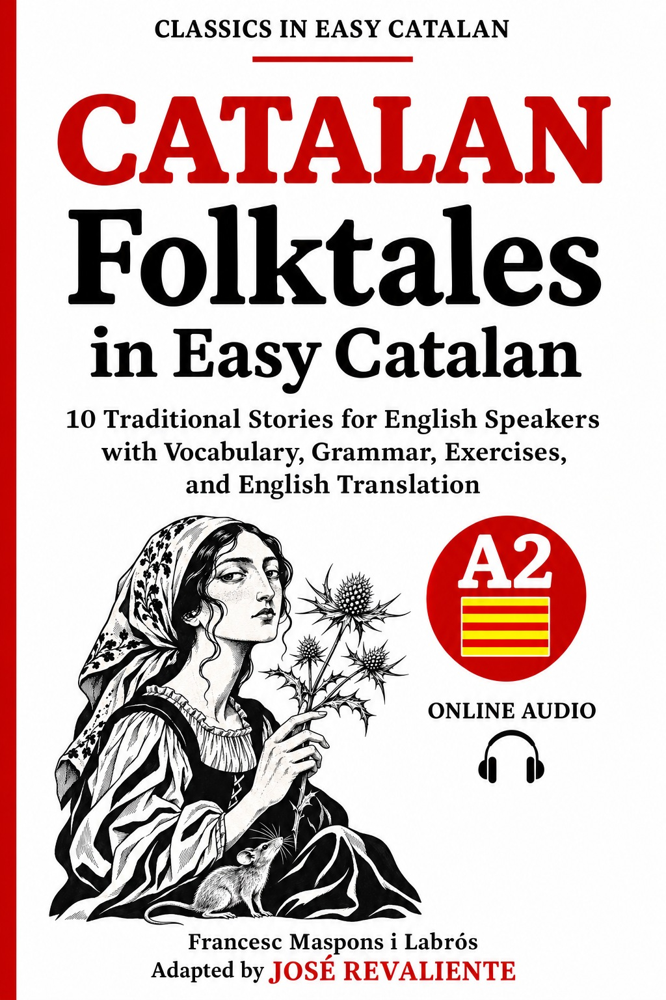

abandonar
verb
to abandon; leave behind.
Story form: abandonat.
the brothers and father leave the boy in the well.
No vol abandonar els seus companys.

Your free reading companion
Step into ten traditional tales.
Read, listen, and make the language your own.
A2 with support + 2 optional B1 challenges
Collected by Francesc Maspons i Labrós
Adapted by José Revaliente
Free resources · No sign-up · English learner support
A simple reading routine
01 / Read
Start with Chapters 1–8. Use the book’s English support after your first reading.
02 / Listen
Replay a short passage. Pause, repeat it aloud, and adjust the speed to suit you.
03 / Remember
Try the questions and flashcards. Open the timeline and map after reading.
The listening room
One recording per chapter, in book order. Chapters 9–10 are longer, optional B1 reading challenges.
Open MP3 · Study questions · Chapter vocabulary
Streaming failed. Try the Open MP3 link or the Internet Archive collection.
Open MP3 · Study questions · Chapter vocabulary
Streaming failed. Try the Open MP3 link or the Internet Archive collection.
Open MP3 · Study questions · Chapter vocabulary
Streaming failed. Try the Open MP3 link or the Internet Archive collection.
Open MP3 · Study questions · Chapter vocabulary
Streaming failed. Try the Open MP3 link or the Internet Archive collection.
Open MP3 · Study questions · Chapter vocabulary
Streaming failed. Try the Open MP3 link or the Internet Archive collection.
Open MP3 · Study questions · Chapter vocabulary
Streaming failed. Try the Open MP3 link or the Internet Archive collection.
Open MP3 · Study questions · Chapter vocabulary
Streaming failed. Try the Open MP3 link or the Internet Archive collection.
Open MP3 · Study questions · Chapter vocabulary
Streaming failed. Try the Open MP3 link or the Internet Archive collection.
Open MP3 · Study questions · Chapter vocabulary
Streaming failed. Try the Open MP3 link or the Internet Archive collection.
Open MP3 · Study questions · Chapter vocabulary
Streaming failed. Try the Open MP3 link or the Internet Archive collection.
Recordings are hosted on Internet Archive. An internet connection is needed for streaming. Use Open MP3 if a player does not load.
Keep exploring
All 163 contextual glossary entries, story forms, Catalan examples and chapter references.
Download CSV →A ready-to-import deck with 163 Catalan → English cards, context, examples and chapter tags.
Download Anki deck →Follow the turning points of each of the ten tales. Contains spoilers.
Open timeline →Review helpers, opponents and changing relationships, story by story. Contains spoilers.
Open character map →60 questions with writing space, a worksheet PDF and a separate answer key.
Open reading companion →The supplied cover at its original 1024 × 1536 resolution.
Download original PNG →Words in their story
All 163 entries from the book’s contextual glossary. Search in Catalan or English, or focus on one chapter.
Showing 163 entries
Cards follow the search and chapter filters above. The Anki deck uses the same 163 entries.
verb
to abandon; leave behind.
Story form: abandonat.
the brothers and father leave the boy in the well.
No vol abandonar els seus companys.
verb
to agree; to consent.
Story form: va accedir.
the father agrees to the bargain.
Va accedir a la petició.
adjective
agreed.
Story form: acordat.
el dia acordat.
Ens trobem el dia acordat.
masculine noun
gratitude.
Story form: agraïment.
gratitude for her actions.
Li va donar les gràcies en senyal d’agraïment.
feminine noun
eagle.
Story form: àguila.
A large bird of prey.
Una àguila volava per damunt de les muntanyes.
feminine noun
needle.
Story form: agulles.
A small pointed object.
Va trobar una agulla al costat del fil.
verb
to free; release.
Story form: alliberar.
release from a spell.
La noia va alliberar el presoner.
feminine noun
almond.
Story form: ametlla.
li va donar una ametlla.
Menjo una ametlla.
feminine noun (diminutive)
little bottle.
Story form: ampolleta.
a small container for blood.
Duu una ampolleta d’aigua.
pronominal verb
to go away / leave.
Story form: ves-te’n.
ves-te’n.
Me’n vaig ara.
masculine noun
ring.
Story form: anell.
a diamond ring.
Porta un anell de plata.
noun
apprentice.
Story form: aprenent.
l’aprenent del ferrer.
L’aprenent treballa amb el mestre.
masculine noun
bow.
Story form: arc.
va preparar l’arc.
Té un arc de fusta.
verb
to pull out; uproot.
Story form: arrencar.
va fer arrencar les canyes.
Va arrencar una mala herba.
verb
to risk.
Story form: arriscar.
hi va arriscar tots els seus diners.
No vull arriscar els meus diners.
masculine noun
rice.
Story form: arròs.
un sac d’arròs.
L’arròs és al plat.
pronominal verb
to dry up.
Story form: es van assecar.
the leaves dried up.
Les plantes s’assequen sense aigua.
feminine noun
hazelnut.
Story form: avellana.
li va donar una avellana.
Obre l’avellana.
masculine noun
dance; ball.
Story form: ball.
van anar al ball del príncep.
Van anar a un ball.
feminine noun
crossbow.
Story form: ballestes.
les seves ballestes.
La ballesta llança una fletxa.
feminine noun
beard.
Story form: barba.
una barba d’or.
L’home té una barba llarga.
verb
to thresh.
Story form: batre’l.
Separate grain from its stalks.
Després de la sega, baten el cereal per obtenir-ne el gra.
masculine noun
wheat.
Story form: blat.
Wheat grown for grain.
A la primavera el camp de blat encara era verd.
masculine noun
piece, fragment.
Story form: bocins.
en mil bocins.
El got s’ha trencat en bocins.
masculine noun
ox.
Story form: bou.
va passar un bou.
El bou és al camp.
feminine noun
bridle.
Story form: brida.
Equipment used to guide a horse.
El genet agafa la brida.
feminine noun
witch.
Story form: bruixa.
era una bruixa.
La bruixa viu al bosc.
pronominal verb
to make fun of.
Story form: se’n burlaven.
se’n burlaven.
No et burlis dels altres.
feminine noun
cauldron.
Story form: caldera.
una gran caldera.
Escalfen l’aigua a la caldera.
feminine noun
leg.
Story form: cama.
un mal a la cama.
Em fa mal la cama.
feminine noun
little bell.
Story form: campanetes.
un vestit ple de campanetes.
La campaneta sona.
masculine noun
canary.
Story form: canari.
the bird whose feathers decorate the dress.
El canari canta al matí.
feminine noun
reed.
Story form: canyes.
van créixer unes canyes.
Hi ha canyes al costat del riu.
feminine noun
coal store.
Story form: carbonera.
Place where coal is stored.
Guardaven el carbó a la carbonera.
masculine noun
wedding.
Story form: casament.
the celebration of a marriage.
El casament és dissabte.
pronominal verb
to marry.
Story form: casar amb mi.
Et voldries casar amb mi?
Es vol casar amb la seva parella.
Chapter 1 · Chapter 2 · Chapter 4 · Chapter 7 · Chapter 8 · Chapter 9 · Chapter 10
feminine noun
carpet; rug.
Story form: catifa.
una catifa màgica.
Hi ha una catifa a terra.
feminine noun
ash.
Story form: cendres.
al costat del foc i de les cendres.
Escombra les cendres.
feminine noun
ribbon.
Story form: cinta.
una cinta blava.
La cinta és blava.
verb
to lodge; drive into.
Story form: clavar.
La va clavar al mig del sol.
Va clavar el clau a la fusta.
feminine noun
shell; husk.
Story form: closca.
treure’n la closca.
Treu la closca de l’ou.
masculine noun
hole in the ground.
Story form: clot.
va fer un clot.
Va fer un clot per plantar un arbre.
masculine noun
necklace.
Story form: collaret.
gift for the youngest daughter.
Es va posar un collaret vermell.
verb
to keep; fulfill.
Story form: compliria.
keeping a promise.
Cal complir les promeses.
verb
to sentence; condemn.
Story form: condemnar.
El va condemnar a mort.
El jutge va condemnar l’acusat.
feminine noun
condition.
Story form: condició.
the rule attached to permission.
Va acceptar amb una condició.
masculine noun
spell; incantation.
Story form: conjurs.
feien conjurs.
La bruixa va fer un conjur.
masculine noun
cultivation; farming.
Story form: conreu.
Cultivation; in terra de conreu, farmland.
El pagès va preparar la terra per al conreu de cereals.
masculine noun
coral.
Story form: corall.
material used for the necklace.
El collaret és de corall.
feminine noun
rope.
Story form: corda.
the rope used to descend and ascend.
Va lligar la caixa amb una corda.
feminine noun
crown.
Story form: corona.
perdria la corona.
El rei porta una corona.
feminine noun
strap.
Story form: corretges.
unes corretges per al cap del cavall.
La bossa té una corretja de cuir.
feminine noun
female cousin.
Story form: cosina.
una cosina que vivia lluny.
La meva cosina viu a Girona.
feminine noun
cave.
Story form: cova.
arribaven de seguida a una cova.
La cova era fosca.
noun
servant.
Story form: criats.
els esperaven criats.
El criat obre la porta.
masculine noun
glass (here: crystal glass).
Story form: cristall.
de cristall.
La copa és de cristall.
feminine noun
tail.
Story form: cua.
a la cua.
El gos mou la cua.
pronominal verb
to get well; recover.
Story form: es curava.
si una persona malalta olorava la poma, es curava.
Es va curar al cap de pocs dies.
adverbial expression
all of a sudden.
Story form: de cop.
I, de cop.
De cop, va començar a ploure.
verb
to discourage; (descoratjat) discouraged.
Story form: Descoratjat.
the prince loses confidence before the first impossible task.
La notícia la va descoratjar.
verb
to argue.
Story form: discutir.
van començar a discutir.
Els germans discutien sovint.
verb
to tame.
Story form: domar.
Bring a wild animal under control.
Volia domar el cavall.
verb
to wear; to carry.
Story form: duu.
to have clothing on.
La noia duu un abric blau.
pronominal verb
to try on.
Story form: emprovar.
se la van emprovar.
Em vull emprovar el vestit.
pronominal verb
to fall in love with.
Story form: se’n va enamorar.
Quan la va veure, se’n va enamorar.
Es va enamorar d’una persona.
Chapter 1 · Chapter 2 · Chapter 4 · Chapter 5 · Chapter 7 · Chapter 10
adjective (past participle of encantar)
enchanted.
Story form: encantades.
unes morralles encantades.
El conte parla d’un bosc encantat.
masculine noun
spell.
Story form: encanteri.
the magic trapping El Trist.
La princesa trenca l’encanteri.
pronominal verb
to take away.
Story form: s’enduia.
the bird carries away the pear.
El vent s’enduu les fulles.
verb
to bury.
Story form: enterrar.
va enterrar el seu germà.
Van enterrar una capsa al jardí.
feminine noun
envy.
Story form: enveja.
Envy felt toward another person.
La seva germana li tenia enveja perquè havia guanyat el premi.
verb
to scatter; to spread.
Story form: escampés.
Spread things over an area.
El vent va escampar les fulles pel jardí.
feminine noun
spittle; drop of spit.
Story form: escopines.
Saliva spat onto the ground.
Les escopines es van assecar.
verb
to scare.
Story form: m’espantes.
que m’espantes molt.
El soroll m’espanta.
feminine noun
sword.
Story form: espasa.
the weapon used against the giant.
El cavaller porta una espasa.
masculine noun
spur.
Story form: esperons.
An object attached to a rider’s heel.
El genet portava esperons a les botes.
feminine noun
ear; head (of grain).
Story form: espiga.
The head of a grain plant.
Les espigues del blat es movien amb el vent.
adjective
weak; faint.
Story form: feble.
the faint sound of the last bell.
Va sentir una veu feble.
idiomatic expression
to pay attention; to heed.
Story form: en feien cas.
the owners disregard what they hear.
No en facis cas.
feminine noun
horseshoe.
Story form: ferradures.
quatre ferradures calentes.
El cavall ha perdut una ferradura.
verb
to shoe (a horse).
Story form: ferrar.
un cavall per ferrar.
El ferrer ha de ferrar el cavall.
noun
blacksmith.
Story form: ferrer.
hi havia un ferrer.
El ferrer treballa el ferro.
verb
to spin thread.
Story form: filar.
es va posar a filar.
La dona fila llana.
feminine noun
distaff.
Story form: filosa.
una filosa d’or.
La filosa sosté la fibra abans de filar.
feminine noun
fair.
Story form: fira.
a place or event where gifts are bought.
Dissabte anirem a la fira.
masculine noun
small traditional flute.
Story form: flabiol.
va fer un flabiol.
El músic toca el flabiol.
feminine noun
flame.
Story form: flames.
entre flames vermelles.
Les flames són altes.
feminine noun
arrow.
Story form: fletxa.
llancés la fletxa més alta.
La fletxa va arribar molt lluny.
masculine noun
hole; opening.
Story form: forat.
the small opening leading out of the well.
Hi ha un forat a la paret.
feminine noun
forge hearth.
Story form: fornal.
van encendre la fornal.
El ferrer escalfa el ferro a la fornal.
masculine noun
spindle.
Story form: fus.
un fus de plata.
El fus gira quan fila.
feminine noun
wood.
Story form: fusta.
the material of the clothes.
La cadira és de fusta.
masculine noun
rooster.
Story form: gall.
va passar un gall.
El gall canta al matí.
feminine noun
hen.
Story form: gallina.
va passar una gallina.
La gallina és al pati.
verb
to sieve; to sift.
Story form: garbellar-lo.
Separate grain from impurities by sifting.
Van garbellar el gra abans de desar-lo.
masculine noun
giant.
Story form: gegants.
A giant in a folktale.
El gegant vivia dalt d’una muntanya.
masculine noun
basin.
Story form: gibrells.
Large open container.
Va omplir el gibrell d’aigua.
feminine plural noun
attic; loft.
Story form: golfes.
The space under a roof.
Guardaven els sacs de gra a les golfes.
verb
to dare.
Story form: gosava.
the father hesitates to speak.
No gosa obrir la porta.
adjective
chubby.
Story form: grassoneta.
tan grassoneta i bonica.
El gat és grassonet.
noun
heir.
Story form: hereu.
l’hereu del regne.
La seva filla és l’hereva.
masculine noun
garden; vegetable garden.
Story form: hort.
the cultivated area with the pear tree.
Plantem tomàquets a l’hort.
masculine noun
hell.
Story form: infern.
a l’infern.
El conte parla de l’infern.
feminine noun
jewel; jewelry.
Story form: joies.
moltes joies.
La capsa és plena de joies.
masculine noun
bow.
Story form: llaç.
aquest llaç a la cua.
El regal té un llaç.
feminine noun
tear.
Story form: llàgrimes.
the princess cries at the reunion.
Té llàgrimes als ulls.
feminine noun
pity.
Story form: llàstima.
the servants feel compassion.
Em fa llàstima aquell animal.
pronominal verb
to get up (out of bed).
Story form: es llevés.
li va dir que es llevés.
Em llevo a les set.
verb
to tie.
Story form: lligat.
s’havia lligat una cinta.
Vaig lligar la cinta al regal.
feminine noun
stepmother.
Story form: madrastra.
la madrastra li va donar.
Viu amb el pare i la madrastra.
feminine noun
traditional farmhouse.
Story form: masia.
the rural house where the girl works.
Viuen en una masia.
feminine noun
mistress of the household; employer’s wife (here).
Story form: mestressa.
a la teva mestressa.
La mestressa va obrir la porta.
noun
doctor.
Story form: metges.
Molts metges el van visitar.
La metgessa visita el pacient.
masculine noun
millet.
Story form: mill.
un sac de mill.
El mill és un cereal.
adjective
middle.
Story form: mitjana.
the daughter between the eldest and youngest.
La germana mitjana viu a Girona.
feminine noun
midnight.
Story form: mitjanit.
the time the bird appears.
Va arribar a mitjanit.
feminine noun
bean.
Story form: mongetes.
un sac de mongetes.
Les mongetes són al plat.
feminine noun, usually plural
horse headgear; bridle straps. Current dictionary lemma: morralla (horse tack)
Story form: morralles.
unes morralles encantades.
Les morralles subjecten el cap del cavall.
feminine noun
walnut.
Story form: nou.
li va donar una nou.
Trenca la nou.
masculine noun
cloud.
Story form: núvols.
va travessar els núvols.
Hi ha núvols al cel.
feminine noun
goose.
Story form: oques.
the birds the girl tends.
Dues oques neden al llac.
masculine noun
wineskin.
Story form: odres.
Leather container for wine.
El vi era dins un odre.
pronominal verb
to drown.
Story form: s’ofegarien.
Drown in water.
Si cau al riu i no sap nedar, es pot ofegar.
verb
to smell; sniff.
Story form: olorava.
olorava la poma.
M’agrada olorar les flors.
adjective
proud (here: vain).
Story form: orgullosa.
es va tornar orgullosa.
Era tan orgullosa que no volia escoltar ningú.
noun
farmer.
Story form: pagès.
un pagès ric.
La pagesa treballa al camp.
adjective
wilted.
Story form: pansides.
roses that have lost freshness.
Les flors estan pansides.
noun
shepherd.
Story form: pastor.
Un pastor va fer un flabiol.
El pastor guarda les ovelles.
pronominal verb
to regret.
Story form: se’n va penedir.
the father regrets his bargain.
Es va penedir de la decisió.
masculine noun
field eryngo (a prickly plant).
Story form: penical; botanical name in TERMCAT: panical.
la flor del penical.
Prop del camí creix un panical.
feminine noun
pear tree.
Story form: perera.
the tree whose pears disappear.
La perera fa flors a la primavera.
feminine noun
comb.
Story form: pinta.
Object with teeth for arranging hair.
Es va pentinar amb una pinta.
feminine noun
feather.
Story form: plomes.
the decoration on the gold dress.
He trobat una ploma al jardí.
feminine noun
bracelet.
Story form: polsera.
a gold bracelet.
Duu una polsera d’or.
masculine noun
well.
Story form: pou.
the deep opening leading to the hidden palace.
L’aigua és al fons del pou.
feminine noun
hurry; haste.
Story form: pressa.
amb tanta pressa.
Tinc pressa per arribar a casa.
feminine noun
test; trial.
Story form: prova.
fer una altra prova.
La prova era difícil.
verb
to go up / come up.
Story form: puja.
puja, puja.
Puja al primer pis.
pronominal verb
to complain.
Story form: Es va queixar.
the boy protests about the wedding.
Es queixa del soroll.
verb
to turn to; to seek help from.
Story form: recórrer.
Turn to someone for help.
Quan va tenir problemes, va recórrer a la seva amiga.
masculine noun
kingdom.
Story form: regne.
l’hereu del regne.
El rei governa el regne.
masculine noun
remedy.
Story form: remei.
cap remei no el curava.
Va buscar un remei per al mal.
verb
to echo; resound.
Story form: ressonar.
the sound after the spell breaks.
La veu ressona dins la cova.
adjective
blond.
Story form: rossos.
els cabells rossos.
Té els cabells rossos.
adjective
rusty.
Story form: rovellada.
the sword found underground.
La clau és rovellada.
feminine noun (diminutive of sabata)
little shoe; slipper.
Story form: sabateta.
una sabateta de cristall.
La sabateta és petita.
masculine noun
sack.
Story form: sac.
un sac de mill.
El sac és ple d’arròs.
masculine noun
sacristan.
Story form: sagristà.
Person who looks after a sacristy.
El sagristà va obrir la capella.
verb
to reap; to cut the crop.
Story form: segar-lo.
Cut a ripe grain crop.
Els pagesos seguen el cereal quan és madur.
verb
to sow; to plant (seeds).
Story form: sembrar.
Sow seeds in the ground.
A la tardor sembraran ordi al camp.
masculine noun
wooden shoe; clog.
Story form: socs.
the shoes made for the girl.
Duia uns socs de fusta.
feminine noun
sand.
Story form: sorra.
sota la sorra.
La platja és plena de sorra.
feminine noun
spot; stain.
Story form: taques.
el sol té taques.
La camisa té una taca.
adjective
murky; cloudy.
Story form: tèrbola.
water that is no longer clear.
L’aigua del riu està tèrbola.
verb
to choose.
Story form: triar.
the princess chooses her husband.
Pots triar el llibre que vulguis.
masculine noun (diminutive)
small piece.
Story form: trossets.
the small bits of wood in the dress.
Talla el pa en trossets.
masculine noun
fang; canine tooth.
Story form: ullals.
the old woman’s two large teeth.
El gos té uns ullals grossos.
feminine noun phrase
spyglass; telescope.
Story form: ullera de llarga vista.
va comprar una ullera de llarga vista.
Mira el vaixell amb la ullera de llarga vista.
pronominal verb
to rub a substance onto oneself.
Story form: s’untaven.
s’untaven el cos amb el líquid.
S’unta les mans amb crema.
verbal construction
to get the urge to / feel like.
Story form: li van venir ganes de.
li van venir ganes de menjar-se-la (a desire arose; ganes is plural, so the verb is plural). Related pattern: tenir ganes de (to feel like doing something)
Tinc ganes de llegir.
feminine noun
shyness; embarrassment.
Story form: vergonya.
tenia vergonya.
Em fa vergonya parlar en públic.
masculine noun
lamb.
Story form: xai.
Young sheep.
El pastor porta un xai.
masculine noun
shawl.
Story form: xal.
Cloth worn over the shoulders.
Es va posar el xal damunt les espatlles.
feminine noun
slipper.
Story form: xinel·la.
Light shoe.
Es va treure una xinel·la abans d’entrar.
No matching entries. Try a shorter word or clear the filters.
A little guidance
Download the .apkg deck and open or import it in Anki. It includes 163 Catalan → English cards with context, examples and chapter tags. To import the TSV instead, choose a Basic note type, use Tab as the separator, allow HTML, and map Front, Back and Tags. The file includes import headers.
Open the Printable Reading Companion. Download the worksheet PDF for ten pages of questions and writing space, without answers. The separate answer key PDF is linked beside it. In the HTML version, answers stay closed until you open them; only open answer panels are included when printing.
The book contains the grammar and spelling notes, extended exercises and full English support translation. These web resources supplement your reading.
Chapters 1–8 follow an A2 path with learner support. Chapters 9–10 are optional B1 challenges. These are independent editorial reading targets, not official certifications.
These traditional stories are intended for adult learners and retain dark endings, violence and difficult family conflicts. The timeline and character map reveal the endings.
Study materials follow this edition’s modern Catalan adaptation. The ten tales are separate narratives; they do not share one geographical map or chronology.